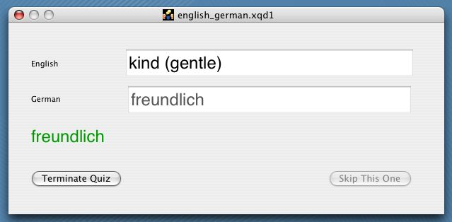

|  | For any non-empty vocabulary list, the Quiz button is activated and presents the quiz window when pressed, at the same time hiding the document's list of items. You will be prompted for a word in the list; simply enter your answer in the other text field and press Return. The answer you give will be compared with the correct value on a case-insensitive basis. If the answer you gave is identical (sorry, no fuzzy logic here!) you will be rewarded by having the score for that item increased in the original table; the correct answer will briefly be displayed in green as shown in the figure. If your guess was incorrect, the correct answer will be displayed in red. Bad student! No beer for you! |
| Quizzes are offered for selected entries, or the document's full set,
if none are selected in the table at the time the quiz is requested. If you wish to skip a particular item,
a button is provided, and the score for that entry will not be affected. To exit the quiz, simply close the
window by pressing its Close or Terminate button. When you close the Quiz window, the current document's
vocabulary list will reappear. A full-screen (no peeking!) quiz window is available via the application
Preferences window.
Scores for vocabulary on which you have tested yourself are maintained cumulatively and are color coded by percentage correct in the table display. Purple: > 80 % correct; Green: 60 to 80 %, Yellow: 40 to 60 %, Red: 20 to 40 %, and Black: 0 to 20 % correct. An item that you have never tested yourself on is empty (White). You can reset the scores for all or selected entries by choosing Reset Scores from the Lexicon menu. A numerical score summary is reported by text in the inspector panel for any selected item. |